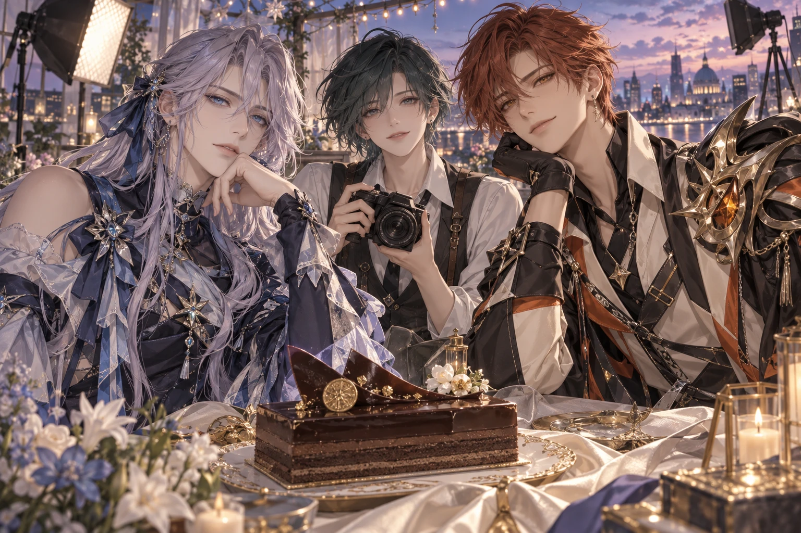
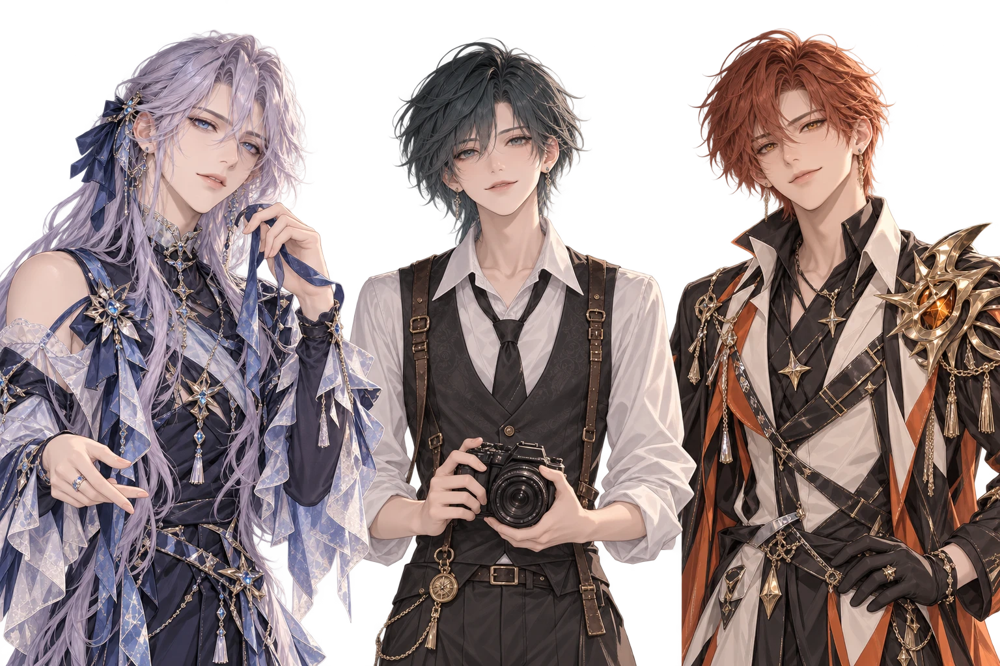

音乐：关

ORIGINAL VISUAL NOVEL
一块反光板。两位主角。没有正常人。
反光板
不是王座
。
三人事故备忘录
开启这场意外
↗
继续上次的故事
关于这份备忘录
「你的顺便，怎么比我的正事还大？」

yqc
镜头应该先看我
你
今天也不是免费劳动力
zzc
我就放一点东西
反光板不是王座
三人事故备忘录
菜单
混乱熟练度
yqc · 初始
zzc · 初始
点击继续 / 空格
▽
历史
存档
读档
自动阅读
重新开始
本次事件结算
再看他们整什么活
↗
回到标题
×